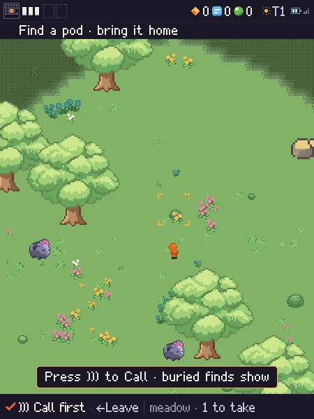
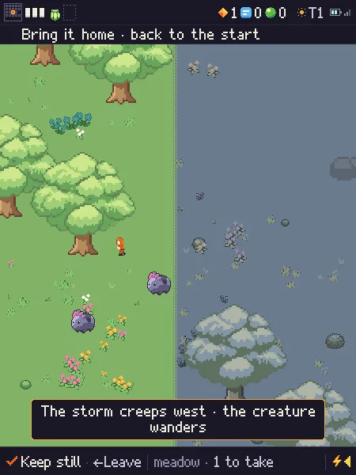
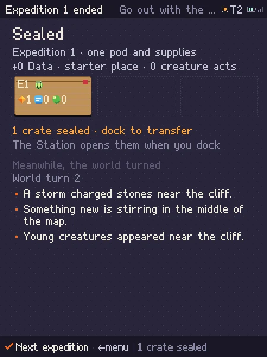
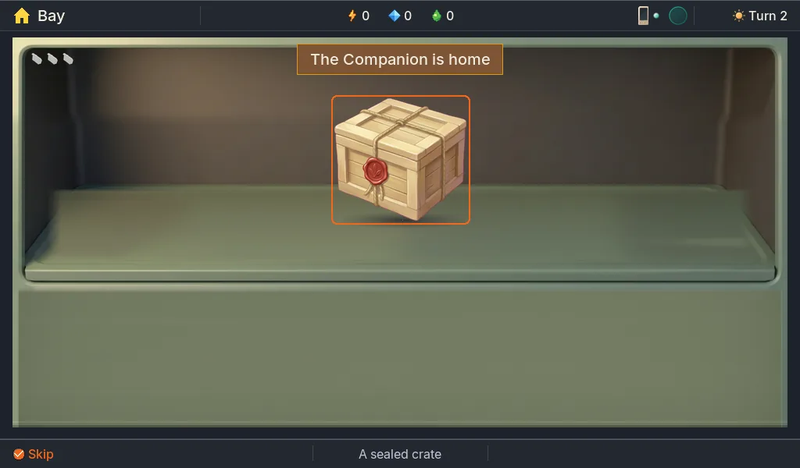

How it plays
Go out. Bring it home. Find out what it is.
You go out with the Companion, a small device in your hand, into a world asleep under fog. You come home to the Station, a lab on your desk, and find out what you brought back. Every recording on this page is the game itself, as it plays in your browser today.
- CompanionSet outPick a start on the map. The fog lifts as you go.
- CompanionExploreGo down into a place. Call. Take what shows.
- CompanionSeal itBack at your flag, what you carry is sealed in a crate.
- CaddyDockSeat the Companion. The crate comes home.
- StationOpen itRead the pods, grow one, meet who was inside.

Out there · the Companion
Call, and the ground answers.
The world is a map of places under fog. Each step on the map lifts a ring of it. Go down into a place and press Call: a pulse lifts the veil, buried pods and warm stones show, curious mibis come closer and wary ones hide.
It is turn-based. Every step is a choice, so nothing needs quick fingers.
The wild ones
Never caught. Got to know.
Wild mibis live their own lives in the world: they wander, eat, shake dry after rain, curl up in the fog. You don't catch them. Put fruit down and back off, or keep still until one settles, and it gives you Data. Some leave something behind: a tuft of fur, now and then a pod.
A pod is a mibi asleep in its shell. You find them in the wild, and a cross at home gives one too.


Weather
Storms pay, and storms hurt.
A storm crawls across the map. Its lightning charges stones with Energy, and the line warns you a step before a strike lands. Out in the open, a stray strike can crack the Companion's Shield. Shelter under an overhang or in a cave, never under a tree.
If the Shield breaks, the trip ends where you stand. Your pods fall there, to fetch on a later trip; the rest of what you carried is lost.
Three things to gather
Energy, Data, Essence. Each one powers something else.
- Energy
- Warm stones that Call finds; stones a storm has struck. Pins on the map, beacons, outposts, the Shield, a better Probe, and part of growing a mibi.
- Data
- What wild mibis do because of you; the marks lightning leaves. Reads your pods at the Station.
- Essence
- Dew, fruit pressed on a stone, a tuft of fur, a pod given back to the wild. Grows a mibi from its pod.
You carry up to twenty of each. Essence never turns into Energy.
Ending a trip
Seal it, and the world turns.
End the expedition at your flag or a lit outpost, and everything you carry is sealed in a crate. Then the world takes a step: creatures move and have young, storms leave charge behind, new pods appear. Every trip finds a slightly different world.


At home · the Station
Only the Station opens the crate.
Seat the Companion in the dock and the crate comes home. Docking takes nothing for you: you open it, and the pods roll into their cups.

Read it. Grow it. Keep it.
Read a pod with Data, part by part: what shows, and what it hides ("shows stripes · hides spots"). Grow it with Energy and Essence, and it buds in real minutes in the incubator. Then it steps out into the vivarium, where your mibis live on their own hours.
A grown mibi can go out with you as a partner.
Partners
Who comes along changes where you can go.
Each kind is good at something. Some places only open with the right partner, but you can always explore on your own.
- Loika
- Calms wary mibis, so they take fruit from your hand.
- Tuikis
- Digs narrow burrows, and glows in the fog.
- Untuva
- Sniffs out buried pods, and flinches before a strike.
Over weeks
Families, from the wild up.
Every mibi carries two copies of everything, one from each parent. Cross two of a kind and the young can show what neither parent shows. The long game: families in every kind, every genome opened, and the looks you like, chosen generation by generation.
How families work- One sitting
- One trip out with the Companion, then home to the Station.
- Days
- Pods grow in real minutes. The world turns once a trip.
- Weeks
- A family of your own, from wild founders you found yourself.
The lab bench.
Next for the Station: a genetic lab. The Companion observes in broad, plain words ("spotted coat", "moves fast"). Feed a wild mibi, watch it often, and it leaves you samples; some you find lying where it went. At the bench, each sample proves one hidden trait, and the Station marks it with its reason.
Two views of the same bench: pictures and plain words for a quick look, the full genetics for anyone who wants every copy.
This part is being designed now. What you can play today is everything above it.
What it never does
No battles. No paid luck. Nothing dies while you're away.
- Is there fighting or ranking?
- No battling and no ranked play.
- Do I pay for luck?
- No loot boxes and no paid luck. What a pod holds is set when you find it.
- Do I need an account?
- No account, no subscription to play, no chat.
- Do I have to come back every day?
- No. There are no rewards for coming back, and nothing gets sick or leaves while you're away.